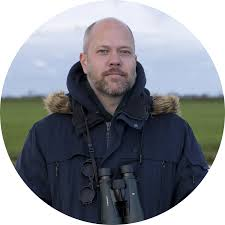

Polderlab Vrouw Venne is a 32-hectare living laboratory in the peatland near Oud Ade, close to Leiden, where farmers, citizens, and researchers work side by side to shape what a sustainable future for Dutch peat-meadow agriculture could look like. It's a joint initiative of the citizen collective Land van Ons and Leiden University, supported by Holland Rijnland, and run through Leiden's Institute of Environmental Sciences (CML) as part of the Liveable Planet programme.
The core problem is one familiar across the Dutch polder landscape: drained peat soil subsides, releases greenhouse gases as it oxidises, and slowly degrades the biodiversity it once supported. Polderlab's answer is to raise the water table back up, then test, plot by plot, what kinds of farming can still work once the water is higher.
What changed
Across its different plots, the lab now runs several parallel experiments: a ridge-and-furrow system where raised beds stay just above a higher water table, growing low shrubs and edible marsh plants between them; restored wet grassland grazed at a higher water level; cultivation of wetland and waterside plants for food and water purification; "wet crops" like cranberry, sphagnum moss, and wild rice, which depend on clean, retained rainwater; and a peat market garden running as community-supported agriculture, where local residents buy directly from the growers. Early rice trials in 2024 and 2025 performed well enough that the rice grower is now scaling up to 0.6 hectares.
In the field

"The Polderlab brings different parties together. That way we can devise solutions for food challenges and problems in agriculture together."Dr. Krijn Trimbos, Leiden University
Why it matters
Polderlab now marks five years of operation, and it offers something rare: not a single fix, but a working demonstration that farmers, citizens, and scientists can co-design land use that holds water, holds carbon, and still holds a livelihood. Every season's results feed directly back into how the next plot is designed.
← Back to Living Proof